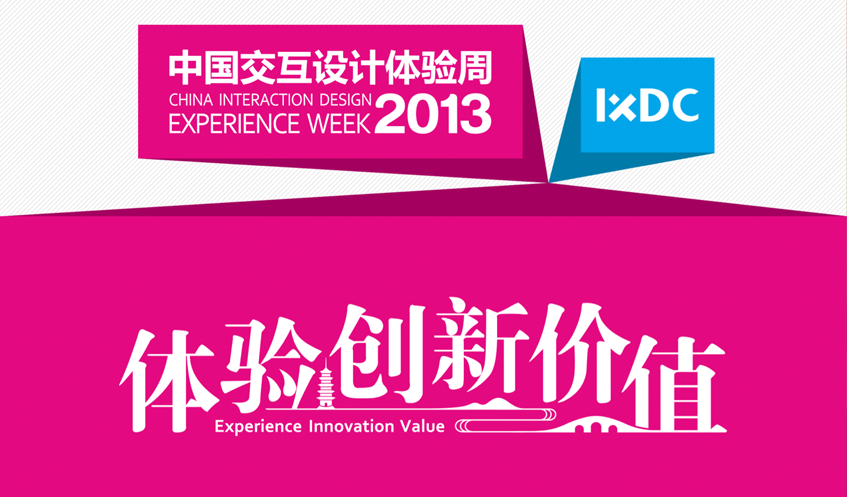
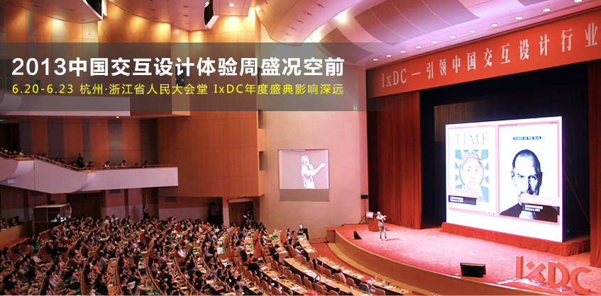
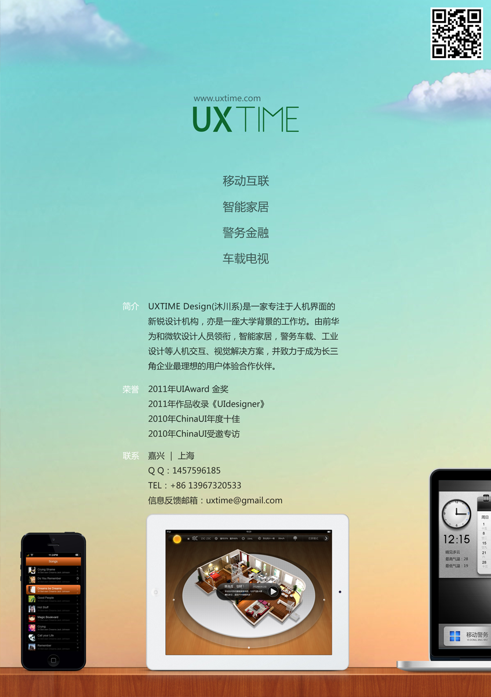

亚洲最具影响力的交互设计峰会，由IxDC（交互设计专业委员会）主办的2013中国交互设计体验周将于6月20-24日在杭州举行，是一场面向交互设计及用户体验行业的年度盛会。本次活动将展示交互设计最新趋势及应用，展示中国交互设计优秀成果，为院校、企业、设计师搭建一个交流、学习、展示的国际平台。UXTIME DESIGN荣幸进入优秀用户界面设计团队推荐榜，我们的智能家居设计作品《Summer》作为优秀作品展出，获得业界好评。
7.7.2012
亚洲最具影响力的交互设计峰会，由IxDC（交互设计专业委员会）主办的2013中国交互设计体验周将于6月20-24日在杭州举行，是一场面向交互设计及用户体验行业的年度盛会。本次活动将展示交互设计最新趋势及应用，展示中国交互设计优秀成果，为院校、企业、设计师搭建一个交流、学习、展示的国际平台。UXTIME DESIGN荣幸进入优秀用户界面设计团队推荐榜，我们的智能家居设计作品《Summer》作为优秀作品展出，获得业界好评。


